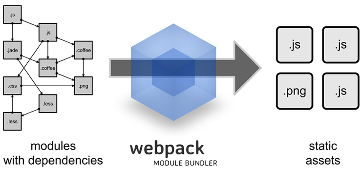

Webpack
定义
webpack是近期最火的一款模块加载器兼打包工具
作用
把各种资源，例如JS（含JSX）、coffee、样式（含less/sass）、图片等都作为模块来使用和处理

Babel
定义
Babel是一种transpiler，将ES6转到ES5
使用
command方式 babel script.js --out-file script-compiled.js
嵌入页面方式
<script type="text\babel"\>
// Your ES6 code
</script>
安装
npm install webpack
npm install babel-cli
npm install babel-loader
npm install css-loader style-loader
npm install file-loader url-loader
npm install babel-helper-builder-react-jsx